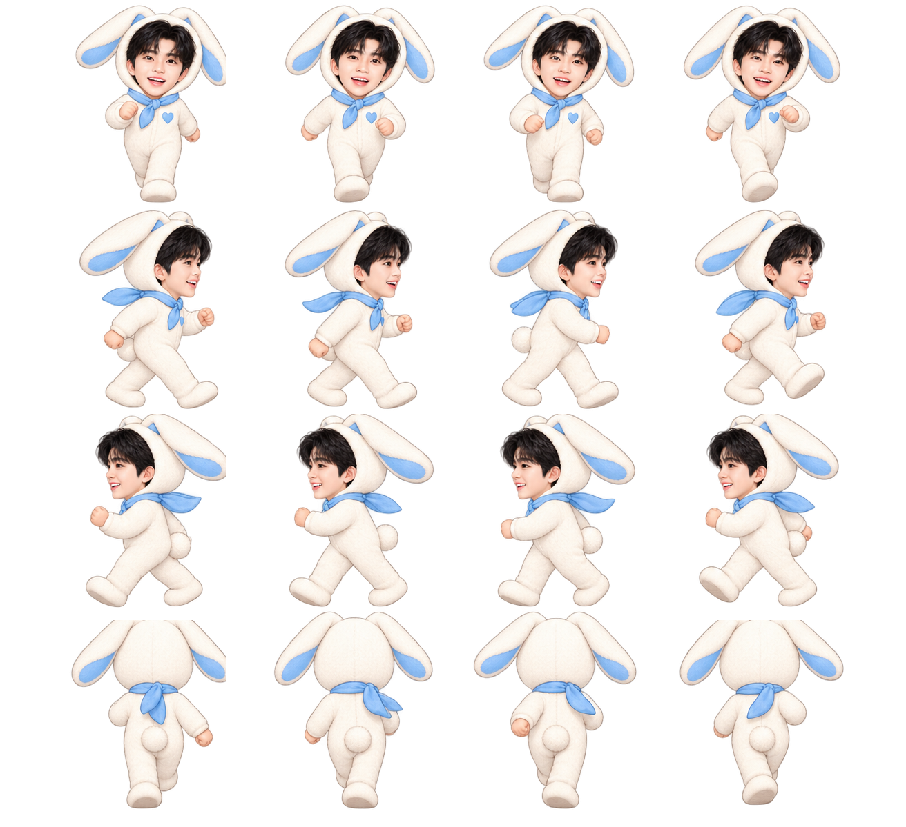
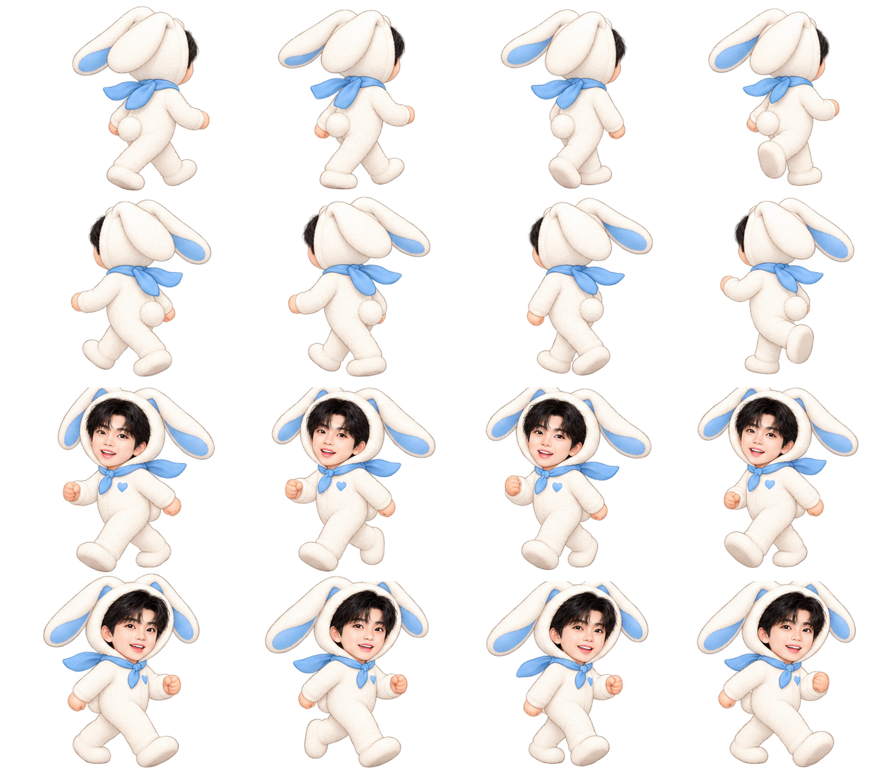

건행 인사
공연장 바깥에서 오늘의 안내를 시작합니다.
승인된 웅토끼 그림을 그대로 사용해 공연장 바깥에서 시원한 실내 휴게 공간으로 안내하는 15초 시험 장면입니다.
2.5D 무대와 캐릭터를 불러오고 있습니다…
완성 영상 다시 저장공연장 바깥에서 오늘의 안내를 시작합니다.
카메라가 웅토끼를 따라가며 공간의 깊이가 드러납니다.
유리문이 양쪽으로 열리고 시원한 실내가 나타납니다.
의자와 안내판 사이에서 휴게 공간을 소개합니다.
캐릭터를 새 3D 얼굴로 바꾸지 않았습니다. 현재 승인된 캐릭터를 정면·후면·좌우·네 방향 대각선으로 확장해 이동 방향에 맞는 자세를 자동 선택합니다. 문을 향할 때에는 뒷모습이 나오고, 방향을 바꿀 때에는 대각선 자세를 거쳐 자연스럽게 돌아섭니다.


이 장면은 기술 비교용 팬 창작 화면입니다. 공개 자료에서 확인한 2026년 고양 공연의 실내 휴게 공간 운영을 바탕으로 재구성했으며 실제 현장을 그대로 재현한 영상은 아닙니다.